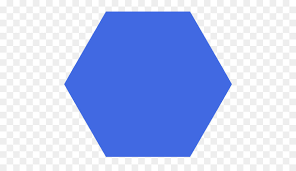

Calculador
Triangulo
Video
El triángulo es un polígono conformado por tres lados, así como por tres vértices y tres ángulos interiores. El triángulo es una figura geométrica muy importante y base de otros polígonos.
Cuadrado
VideoEl cuadrado es una figura geométrica caracterizada por ser un tipo de paralelogramo con cuatro lados de igual longitud y paralelos entre sí. Un cuadrado es entonces un polígono regular. Esto quiere decir que todos sus lados son idénticos, y además todos sus ángulos interiores miden lo mismo (en este caso, 90º).
Circulo
VideoUn círculo es una figura plana formada por una CIRCUNFERENCIA y su interior. Un círculo es una figura muy especial. Veamos porqué. La línea curva que conforma el contorno de un círculo es una CIRCUNFERENCIA, que es una línea curva cerrada en la que todos sus puntos están a la misma distancia de su centro.
Rectangulo
VideoEl rectángulo es un cuadrilátero, específicamente un paralelogramo, que tiene dos pares de lados de igual longitud. A su vez, todos los ángulos interiores son rectos, es decir, miden 90º
cilindro
VideoLos elementos de un cilindro son los siguientes: Bases: Son los dos círculos que constituyen la cara superior y la cara inferior del cilindro. Eje: Es la recta imaginaria sobre la cual se gira para generar el cilindro. Generatriz: Es el lado opuesto al eje que se genera con la formación del cilindro (CD)
trapecio
VideoLos trapecios son un tipo de polígono muy especial. Forman parte de los cuadriláteros, ya que tienen 4 lados. Concretamente se clasifican como no paralelogramos, ya que no tienen todos sus lados paralelos entre sí: tienen 2 lados paralelos y 2 no paralelos.
Hexágono
Video El hexágono es una figura geométrica formada por seis lados, además que tiene seis vértices y seis ángulos internos. Es decir, el hexágono es un polígono que cuenta con seis lados, siendo más complejo que un pentágono o un cuadrilátero.
Pentágono
VideoEl pentágono es una figura geométrica formada por cinco lados, además que tiene cinco vértices y cinco ángulos internos. Es decir, el pentágono es un polígono que cuenta con cinco lados, siendo de mayor complejidad que un cuadrilátero y que un triángulo.
Políg.reg
VideoLos polígonos regulares son aquellos que tienen todos sus lados y ángulos iguales. Los polígonos irregulares son los que no cumplen esas dos condiciones. Las principales características de todos los polígonos regulares son: Todos sus lados miden lo mismo. Todos sus ángulos interiores miden lo mismo.
Rombo
VideoEl rombo es un cuadrilátero, específicamente un paralelogramo, que tiene dos ángulos idénticos agudos (menores que 90º) y otro par de ángulos, también iguales, que son obtusos (mayores que 90º). Asimismo, todos los lados de la figura son de la misma longitud
Romboide
VideoEl romboide es un cuadrilátero, específicamente un paralelogramo, que tiene dos ángulos idénticos agudos (menores que 90º) y otro par de ángulos, también iguales, que son obtusos (mayores que 90º). Asimismo, dos de sus lados miden lo mismo, y los otros dos también comparten la misma longitud.
Tetraedro
VideoEl tetraedro es un poliedro con cuatro caras, seis aristas y cuatro vértices. Se trata de una figura tridimensional formada por varios polígonos que, en este caso, son triángulos. El tetraedro se caracteriza por ser el más simple de los poliedros, y el único que posee menos de cinco lados.
Cono
VideoEl cono es entonces un cuerpo geométrico con una base circular que está unida a un punto exterior llamo vértice.
Cubo
Videoun cubo es un cuerpo formado por seis caras que son cuadradas. La particularidad de estos cuerpos es que todas las caras son congruentes, están dispuestas de forma paralela y de a pares, y tienen cuatro lados.